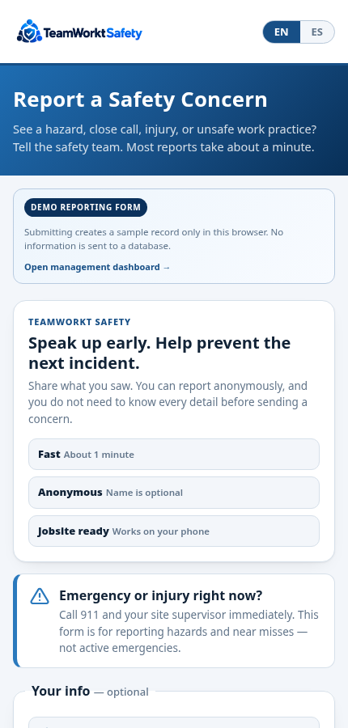
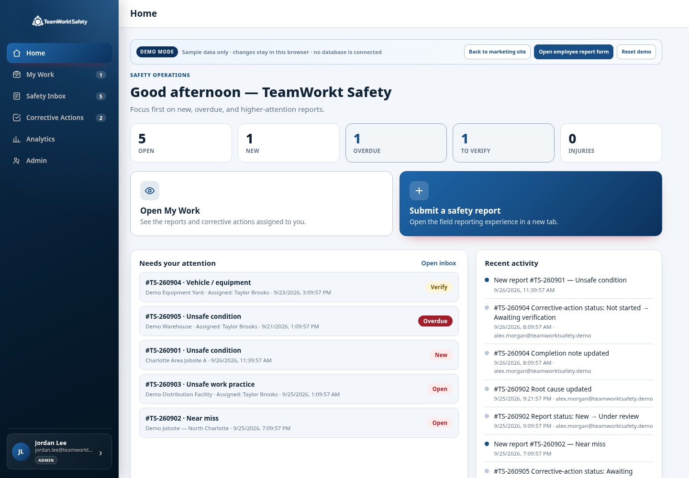
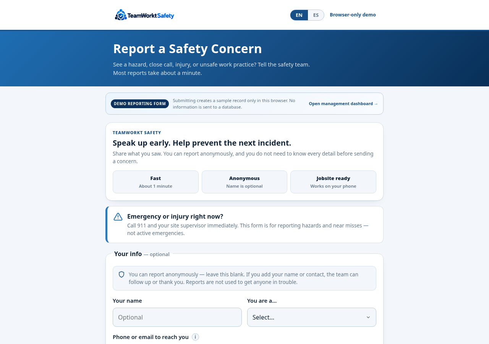

Keep your safety reports in one place, even when your team is out in the field.
TeamWorkt Safety gives smaller companies a simple way to report near misses, injuries and unsafe conditions, then track what happens next. No paper trail to chase down. No complicated system for your crew to learn.
Ask for a walkthroughBuilt with smaller construction companies in mind. Useful for any business ready to move its safety reports out of paper files and scattered messages.
Photo needed: a real, naturally lit image of a small construction crew on a jobsite. No stock or generated photo.
Someone reports a problem. Who makes sure it gets fixed?
On a busy jobsite, an injury report might start on paper. A near miss might arrive by text. The photo could be on somebody else's phone.
TeamWorkt keeps the original report, the assigned work, the evidence and the final decision together. You can see what still needs attention without digging through yesterday's messages.
A worker can report a concern from a phone, with photos and details while it's fresh.
A manager sees the report, reviews it and decides whether follow-up is needed.
The responsible person gets a clear action instead of a vague request to “take care of it.”
Management can review the evidence before closing the record.
Report a near miss from your phone.
The reporting form walks someone through what happened and what needs to be recorded. They can add photos and supporting details. English and Spanish are available.
You can share a reporting link or QR code with your crew. There's no separate app they have to install.
A worker doesn't need to know your safety process to tell you something went wrong.

Actual product screen · employee reporting on mobile

Actual product screen · manager's dashboard
Know what is open and what is done.
Your team has one place to review safety reports and keep the follow-up moving.
- Review near misses, injuries and other concerns.
- Assign corrective actions with owners and due dates.
- Check evidence and ask for more work when needed.
- Close reports with a documented record, including attachments.
You don't need a full-time safety department to know what still needs your attention.
A proper report without the paperwork pile.
Instead of sorting through texts, email and photos later, managers can review the information in the same place it was submitted.
As the work progresses, notes, evidence and decisions stay with the record. Closed reports remain available to review, and PDF records can be produced.
Made with small construction crews in mind. Also relevant to roofing, electrical, HVAC, field service and light manufacturing teams.

Actual product screen · full reporting form
Tell us how your company works. We'll help with the setup.
We want smaller businesses to have a practical way to record and follow up on safety concerns, without taking on an expensive, complicated software project.
We'll walk through the fit with you before discussing a setup.
Share the company basics, who handles safety reports and how your crew currently reports incidents.
We'll discuss company details, access, reporting needs and the people responsible for follow-up.
See the reporting and management screens together, and ask the questions that matter to your business.
Have questions about data protection? Read our security approach. The application supports the reporting process; it does not replace emergency response or professional safety advice.
Let's see whether it fits your crew.
Tell us a little about your company. We can show you the actual reporting form, what your manager sees and how follow-up work is handled.
Questions first? Email hello@teamworktsafety.com.
This form is for companies interested in TeamWorkt Safety. It is not for submitting an employee injury or emergency report.